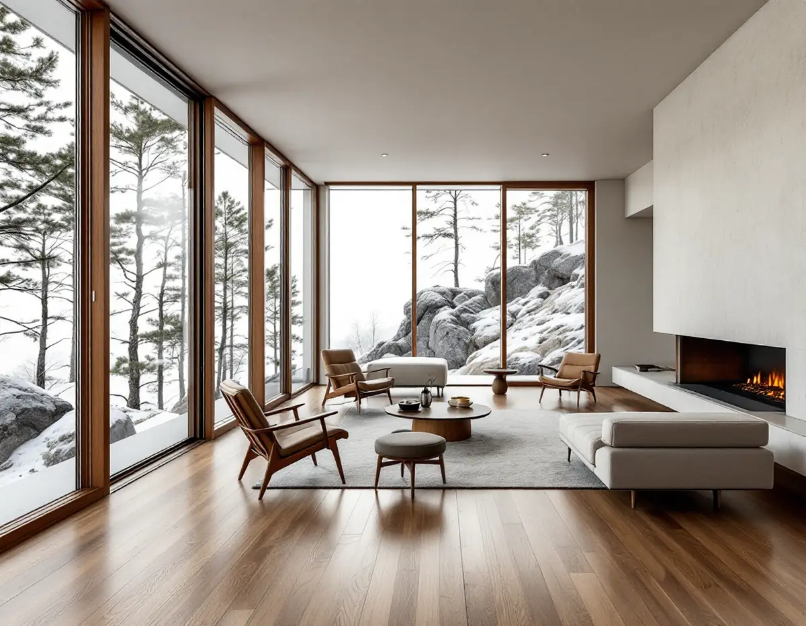
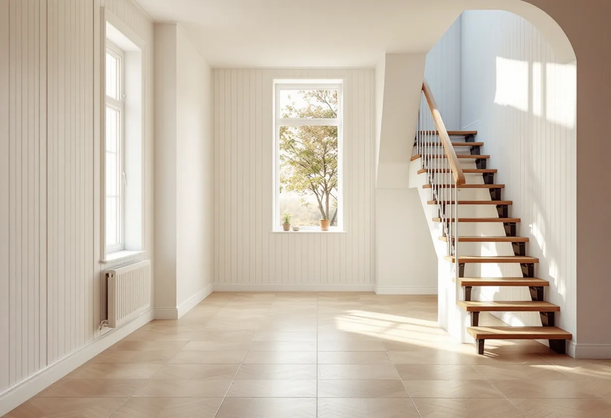

Besök i huset
Vi går igenom planen ett i taget och noterar vilka rum som ligger mot mark eller berg.

Lidingö är kuperat, och många hus har ett nedre plan som delvis ligger i berget eller mot marken.
Beskriv jobbet kort.
Något blev fel. Kontrollera uppgifterna eller ring 08 12 410 276.
Vi tittar på jobbet på plats innan du får offert.
Du ser vad som ingår och vad det kostar.
Vi drar av ROT direkt och sköter ansökan.
Geal Entreprenad AB, Bromma. Org.nr 559303-7566.

Där ställs andra krav på golvet än i resten av huset. Geal Entreprenad AB lägger parkett, trägolv och klinker och slipar befintliga golv på hela ön, med gratis platsbesök och skriftligt kostnadsförslag.
Lidingö stads kulturmiljöprogram beskriver Tjädervägen i sydvästra Mosstorp som ett exempel på ett mer burget och exklusivt villabyggande från 1960-talet. Området projekterades i början av 1960-talet, och de omkring 20 villorna byggdes mellan 1961 och 1968. De flesta är arkitektritade, och flera är souterrängvillor som har anpassats till nivåskillnaderna på bergskrönet och i sluttningarna.
Programmet lyfter fram äkta material som ett kännetecken för området, bland annat ädelträ, ibland teak, i fönsterpartier och kopparplåt på takfoten. Villorna beskrivs som exteriört ovanligt intakta. I ett hus med så påkostade material passar ett golv som går att slipa om, som massivt trä eller parkett med tjockt slitskikt.
Det plan som ligger mot berget eller marken är det känsliga. Byggkeramikrådet skriver att man i källare med markfukt bör undvika alltför stora plattor och alltför smala fogar, och rekommenderar högst 900 cm² per platta. Tätskiktet kan där begränsas till de ytor som verkligen blir blöta, som duschgolvet.
Ska nedre planet få trägolv eller parkett börjar vi med att ta reda på hur fuktigt underlaget är. Golvbranschen påpekar att trä tar upp fukt ur omgivningen och sväller när den relativa fuktigheten är hög, och rekommenderar att bjälklagets fukt kontrolleras av en fuktkontrollant inom RBK. Ska nedre planet också få nytt badrum gör vi det inom badrumsrenovering på Lidingö.
En helt annan miljö är Hersby Gärde, där arkitekterna Ancker, Gate & Lindegren ritade radhusen vid Kämpavägen och Laduvägen 1948. Området byggdes 1948–1950 på mark som hört till Hersby gård, och programmet beskriver husen som välbevarade och utförda med goda material och hantverksmässig omsorg. Radhusen har två våningar, några med källare och några i souterräng. Bebyggelsen finns inventerad i Riksantikvarieämbetets bebyggelseregister, och programmet påpekar att radhusbyggandet har tradition på Lidingö.
I ett radhus från den tiden är det vanligt att golven har bytts eller täckts över i omgångar. Vi lyfter en list och tittar på vad som ligger under, och om det finns äldre trägolv som går att slipa föreslår vi det före ett nytt golv. Källaren behandlar vi som nedre planet i en souterrängvilla: fukten mäts först.
Programmet beskriver Hersby Gärde som ett grönt och luftigt område med stora trädgårdar mellan längorna. Med så mycket trädgård runt husen får golvet närmast entrén ta emot mer jord och grus än man kanske räknar med, och där väljer vi en yta som är lätt att hålla ren.
Flerskiktsparkett läggs ofta flytande och är snabb att få på plats, vilket passar när ett helt plan ska göras om utan att huset står tomt länge. Massivt trä spikas eller limmas och tål fler slipningar under sin livstid. I ett hus med påkostade material i övrigt är det ofta det senare man väljer. Vi visar alternativen vid besöket – mer om ytbehandlingar finns under golvläggning.
I ett hus i flera plan möts golven vid trappan. Ett nytt golv som är tjockare än det gamla ändrar höjden på det översta och nedersta trappsteget, och då kan stegen bli olika höga. Därför mäter vi höjderna innan golvtyp väljs och planerar hur övergången mot trappan ska se ut, med en trappnos eller list som passar golvet.
Samma sak gäller dörrar och trösklar. Ett tjockare golv kan kräva att dörrbladen kortas, och det är bättre att veta före beställningen än att upptäcka det när golvet ligger.
Har nedre planet en egen dörr direkt ut till trädgården kommer det in väta och grus just där. Där kan ett tåligare golv eller en klinkeryta innanför dörren vara klokt, även om resten av planet får trä.
Vi går igenom planen ett i taget och noterar vilka rum som ligger mot mark eller berg.
I nedre planet bokas en fuktmätning, i övriga rum kontrolleras bjälklag och planhet.
Material, förarbeten och läggning redovisas plan för plan.
Gammalt golv tas bort och underlaget rätas upp eller jämnas ut.
Golvet läggs eller slipas, och trösklar och lister mot trappor och dörrar anpassas.
Vi går igenom golvet med dig och lämnar skötselråd för vald yta.
Slipning och byte av golv i villa eller radhus räknas som rotarbete hos Skatteverket, och det gör även plattsättning. Avdraget är 30 procent av arbetskostnaden och gäller inte material eller resor.
Varje person kan få högst 50 000 kr i rotavdrag per år, och rot och rut får tillsammans bli högst 75 000 kr. Är ni två som äger och bor i huset kan ni dela avdraget. Vi drar det direkt på fakturan.
I ett hus i flera plan påverkar antalet nivåer, trappor och trösklar mer än ytan i sig. I nedre planet tillkommer fuktmätning och ibland avjämning eller fuktspärr, och valet mellan massivt trä och flerskiktsparkett spelar in. Platsbesöket är gratis och du får ett skriftligt kostnadsförslag.
Parkett, trägolv, klinker och slipning.
Golvläggning i Stockholm →Takbyte, takbesiktning och plåtarbeten.
Takläggare på Lidingö →Brevik, Mölna och Käppala.
Takrenovering på Lidingö →Villastäder, souterräng och lov.
Köksrenovering på Lidingö →Väggar och snickerier inne och ute.
Målare på Lidingö →Altan, dörrar och snickerier.
Snickare på Lidingö →Panel, puts och isolering.
Fasadrenovering på Lidingö →Potten, avloppet och kulturmiljöerna.
Attefallshus på Lidingö →Värdefulla hus, kulör och bidrag.
Fasadmålning på Lidingö →Villastäderna och Brevik på Lidingö.
Fönsterbyte på Lidingö →Fönster i utpekade kulturmiljöer.
Fönsterrenovering på Lidingö →Slipa och behandla trägolv i kök och hall.
Golvslipning på Lidingö →Plåt i vind och värdefulla miljöer.
Plåtslagare på Lidingö →Nytt material, k-märkning och byggnadsminnen.
Takbyte på Lidingö →Ny tapet med hänsyn till huset.
Tapetsering på Lidingö →Webbkartan, programmet och frivilligt lov.
Tillbyggnad på Lidingö →Behåll stommen, bygg om resten.
Totalrenovering på Lidingö →Eller ring 08 12 410 276, mån–fre 08–17.
Beskriv jobbet kort.
Något blev fel. Kontrollera uppgifterna eller ring 08 12 410 276.